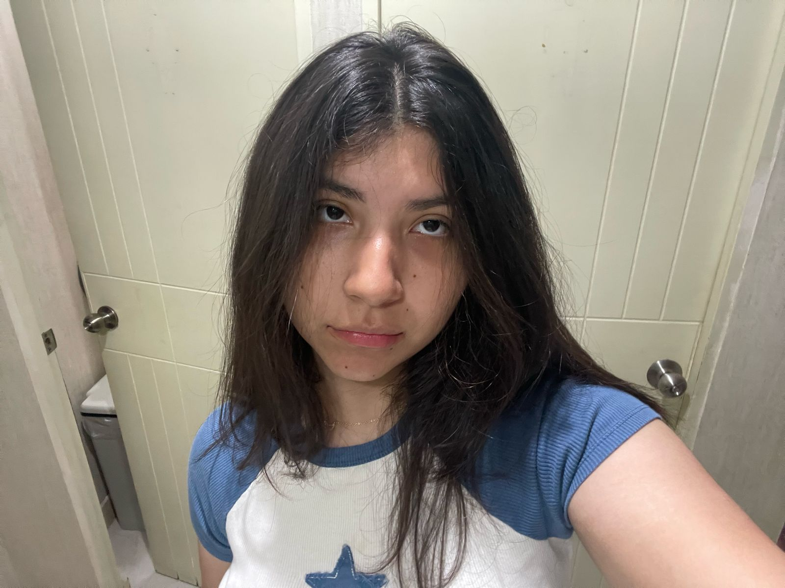
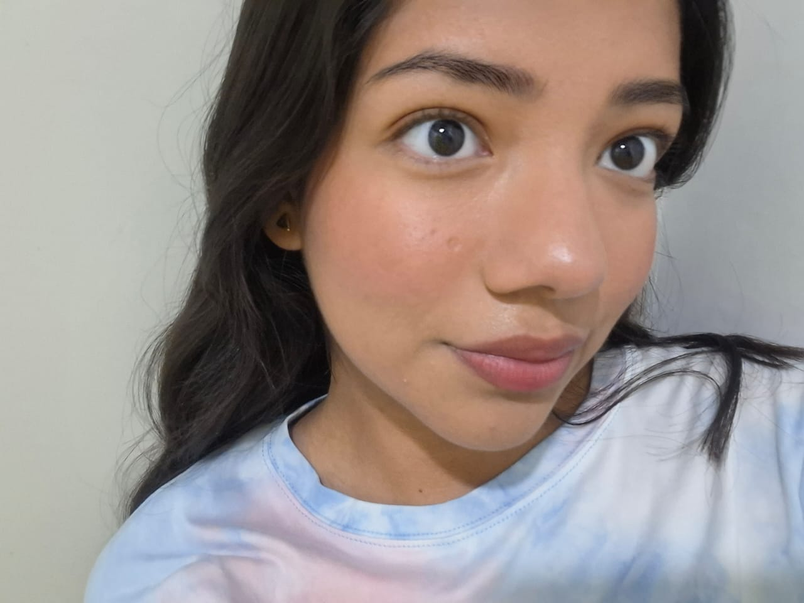
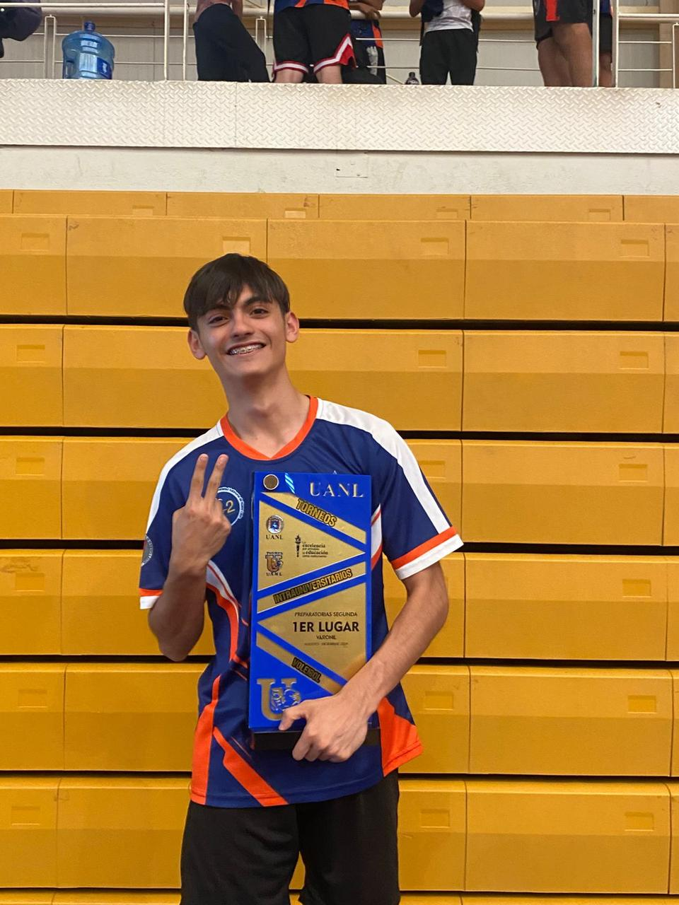

Nuestro Equipo
Juan Cabrera
Fundador y Programador
Soy el fundador y programador de Conectados con Responsabilidad y la persona detrás de la creación de la pagina web y sus utilidades. Su misión es ayudar a las personas a encontrar el balance perfecto entre la tecnología y la vida cotidiana y asi no caer en el exceso y la dependencia.
Mariana Salinas
Asesor en Bienestar Digital
Carlos es experto en bienestar digital y acompaña a nuestros clientes a través de sesiones personalizadas. Su enfoque está en la creación de hábitos saludables frente a la tecnología.

Marian Alanis
Especialista en Psicología Digital
Laura se especializa en los efectos psicológicos del uso excesivo de redes sociales y trabaja para ayudar a nuestros clientes a manejar los aspectos emocionales que esto genera.

Veronica Solis
Especialista en Psicología Digital
Laura se especializa en los efectos psicológicos del uso excesivo de redes sociales y trabaja para ayudar a nuestros clientes a manejar los aspectos emocionales que esto genera.
Kamila Leija
Especialista en Psicología Digital
Laura se especializa en los efectos psicológicos del uso excesivo de redes sociales y trabaja para ayudar a nuestros clientes a manejar los aspectos emocionales que esto genera.

Issac Aguirre
Especialista en Psicología Digital
Laura se especializa en los efectos psicológicos del uso excesivo de redes sociales y trabaja para ayudar a nuestros clientes a manejar los aspectos emocionales que esto genera.